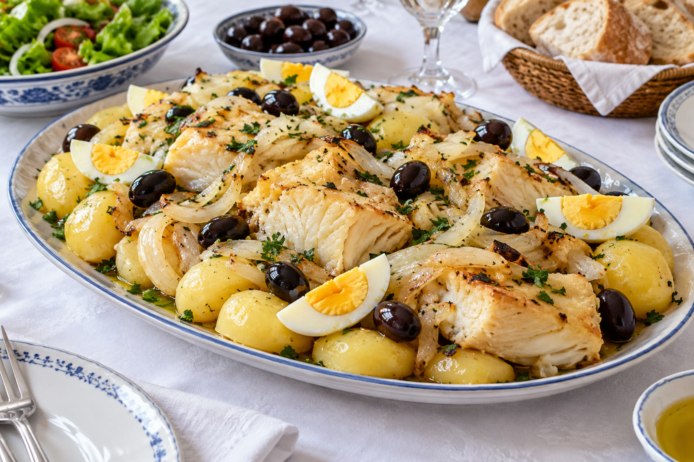
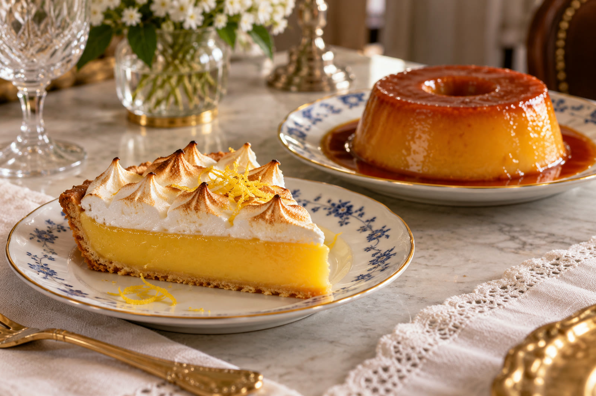

A especialidade
Bacalhau seco e salgado
O nosso bacalhau é dos pratos mais elogiados pelos clientes, servido em porções generosas para partilhar.

Para acabar
Torta de limão e pudim Abade de Priscos
Duas sobremesas que os clientes não esquecem.
Alguns pratos
Polvo à lagareiro
Com batata a murro e bom azeite.
Novilho e angus
Carnes para quem gosta de carne.
Croquetes e entradas
[Aqui entra o vosso menu completo com preços.]
Informações úteis
Onde ficam?
Praceta Padre Diamantino Martins 20, 4700-438 Braga.
Qual é o horário?
Almoço 12h00–15h00 e jantar 19h00–22h00. Quarta-feira encerrado. [Horário de domingo e terça ao jantar a confirmar convosco.]
Fazem entregas?
Não. Venha visitar-nos e sente-se à mesa.
Reserve a sua mesa
Ligue-nos com o dia, a hora e quantos são.
Ligar 253 619 962